Lançamento no Porto Maravilha
Farol da Guanabara
Farol da Guanabara ilumina o caminho para sua nova casa no Porto Maravilha. São apartamentos de 1 a 3 quartos, com 32 a 60 m², lazer no rooftop, vista privilegiada e previsão de entrega para 2028.
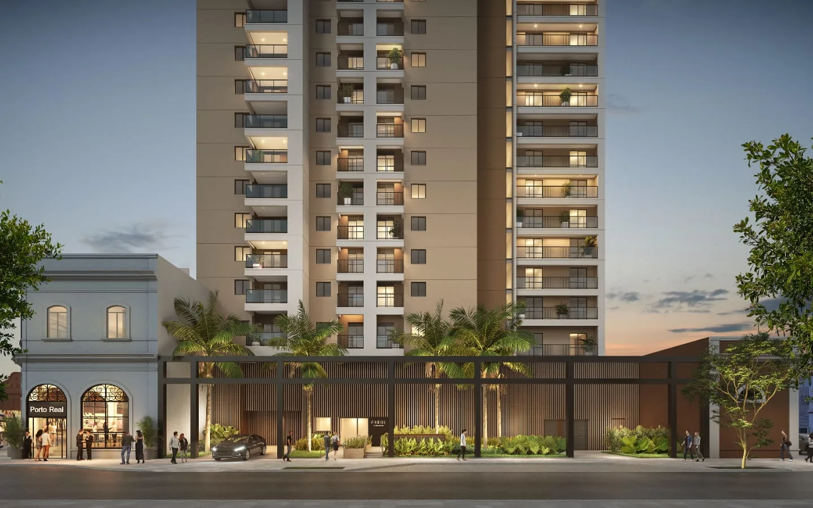
Diferenciais
Vista, lazer e investimento no Porto Maravilha
Galeria
Fotos do empreendimento
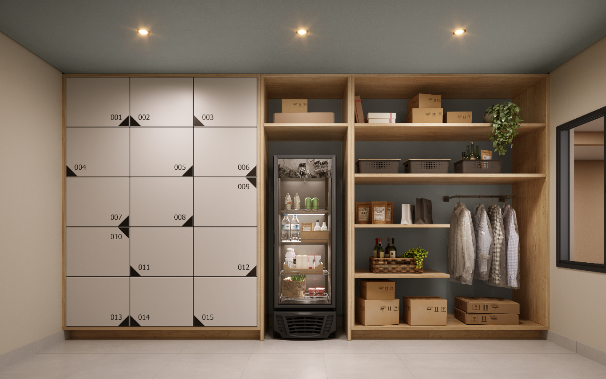
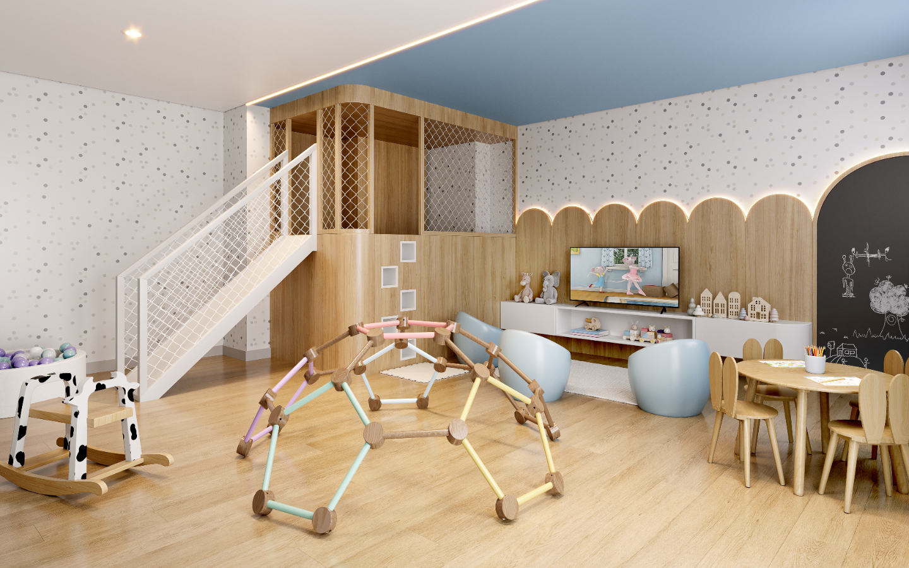
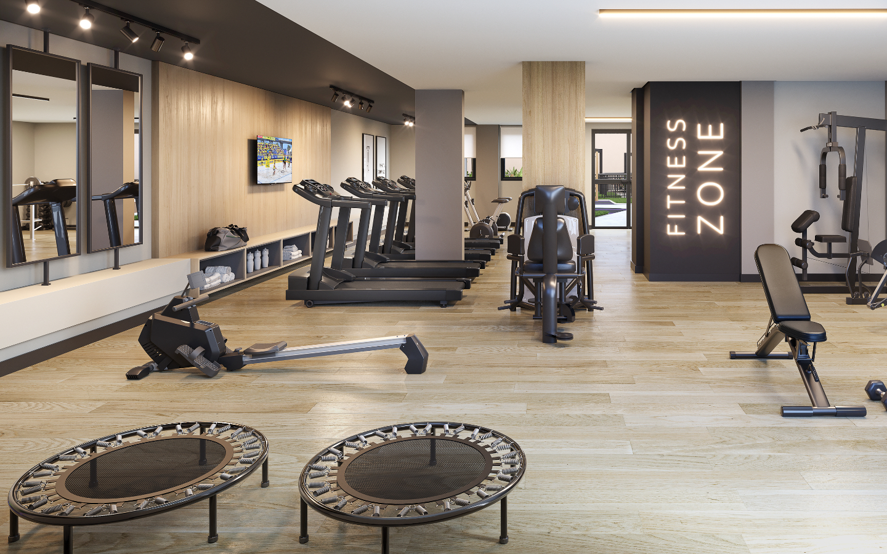
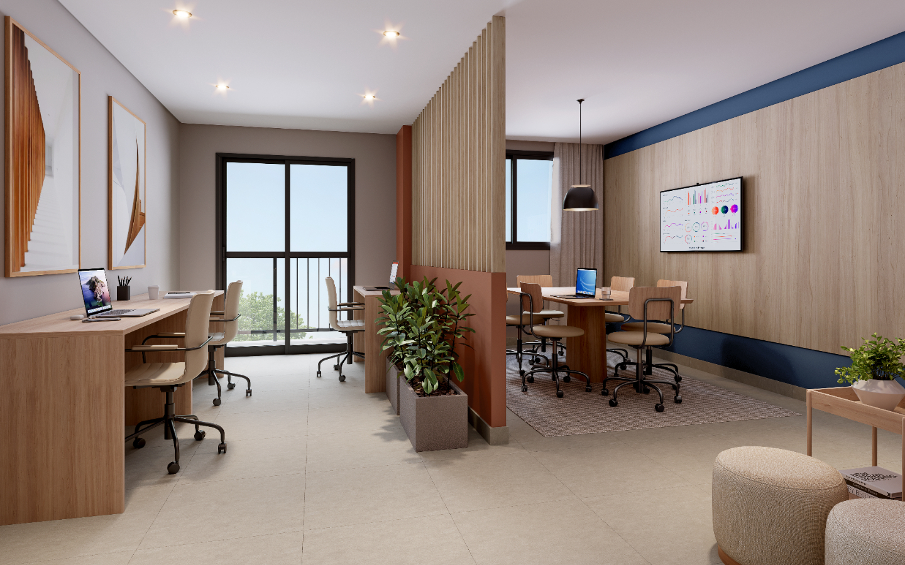
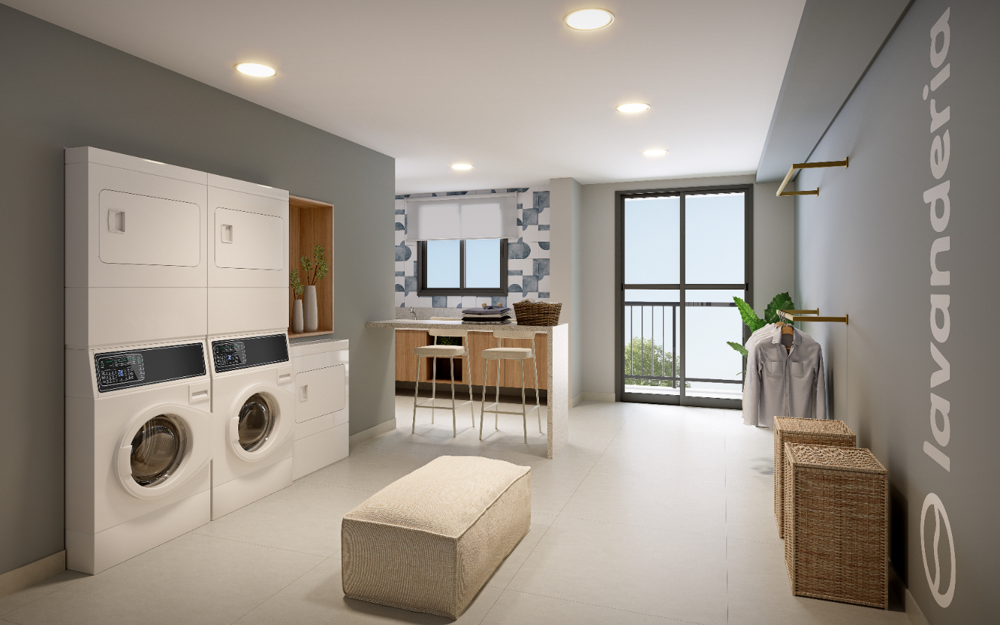
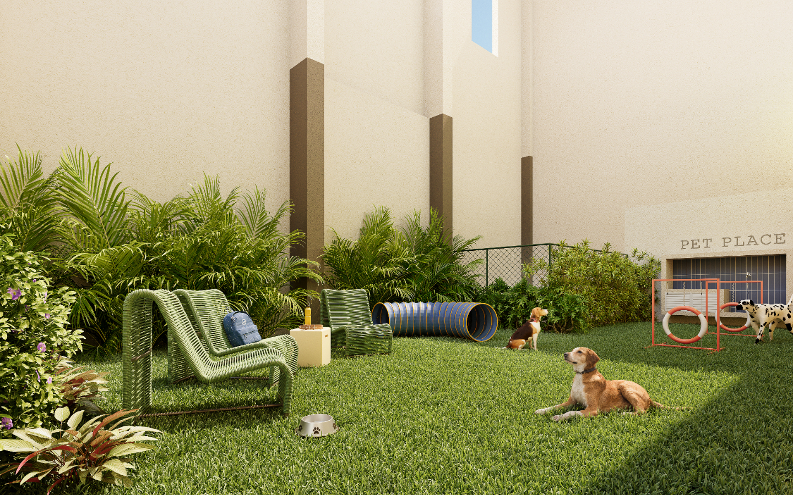
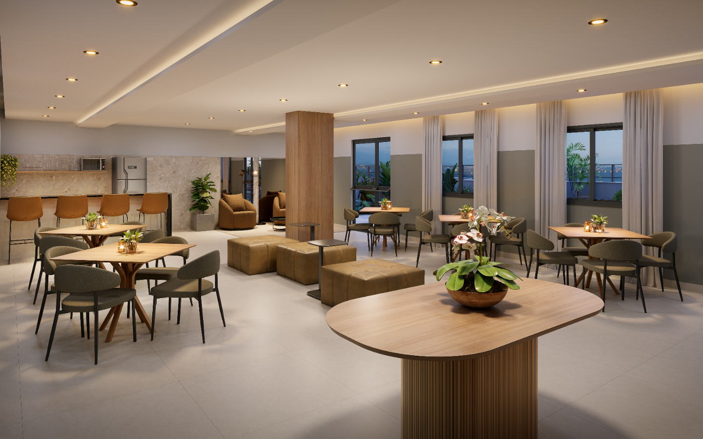
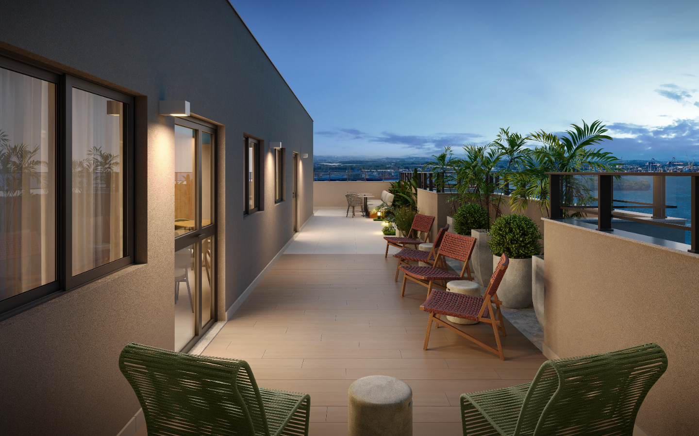
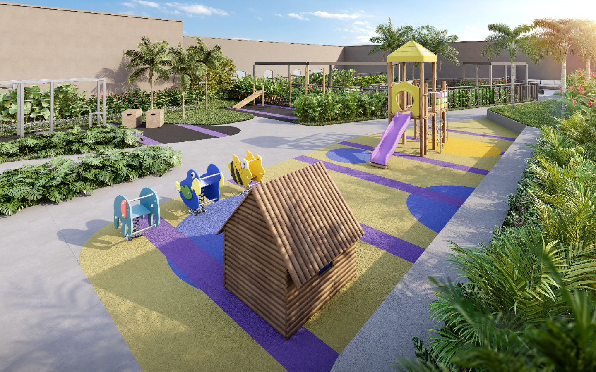
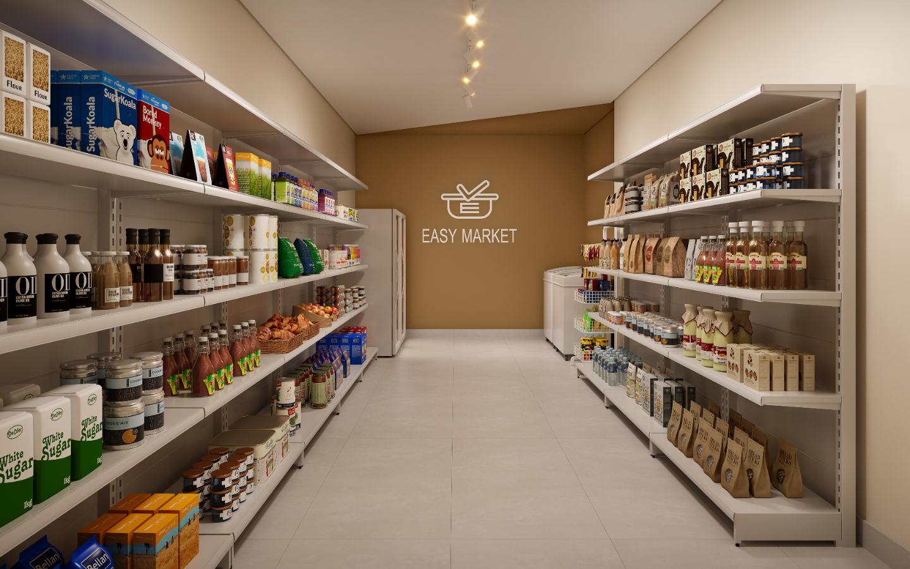
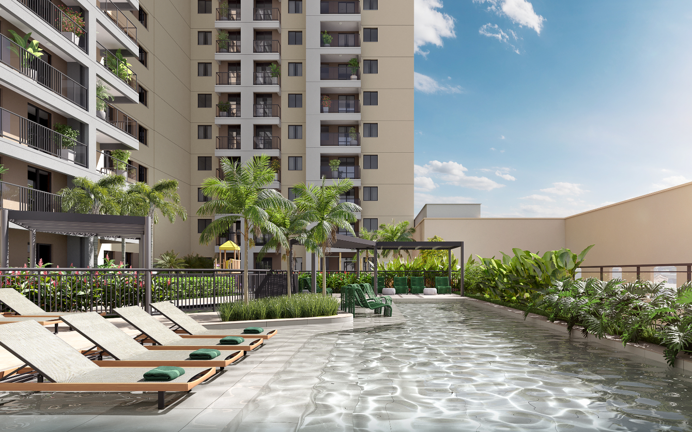